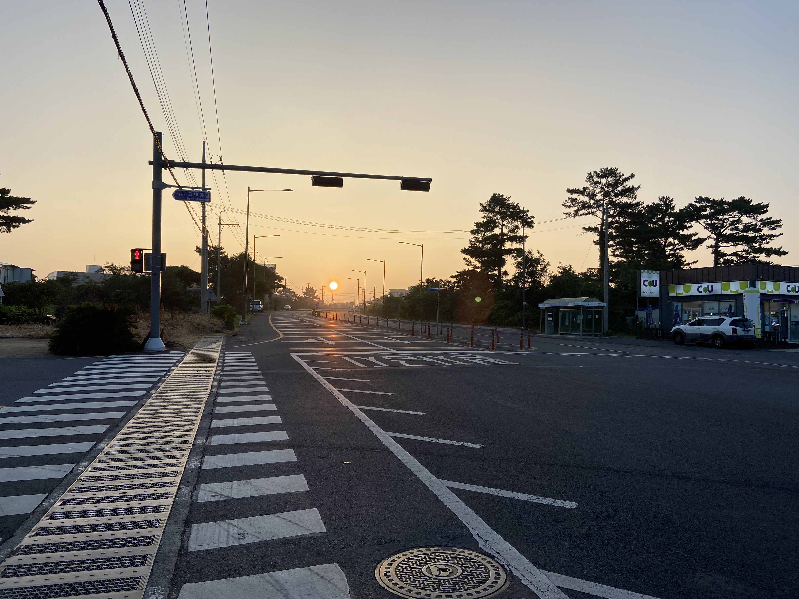
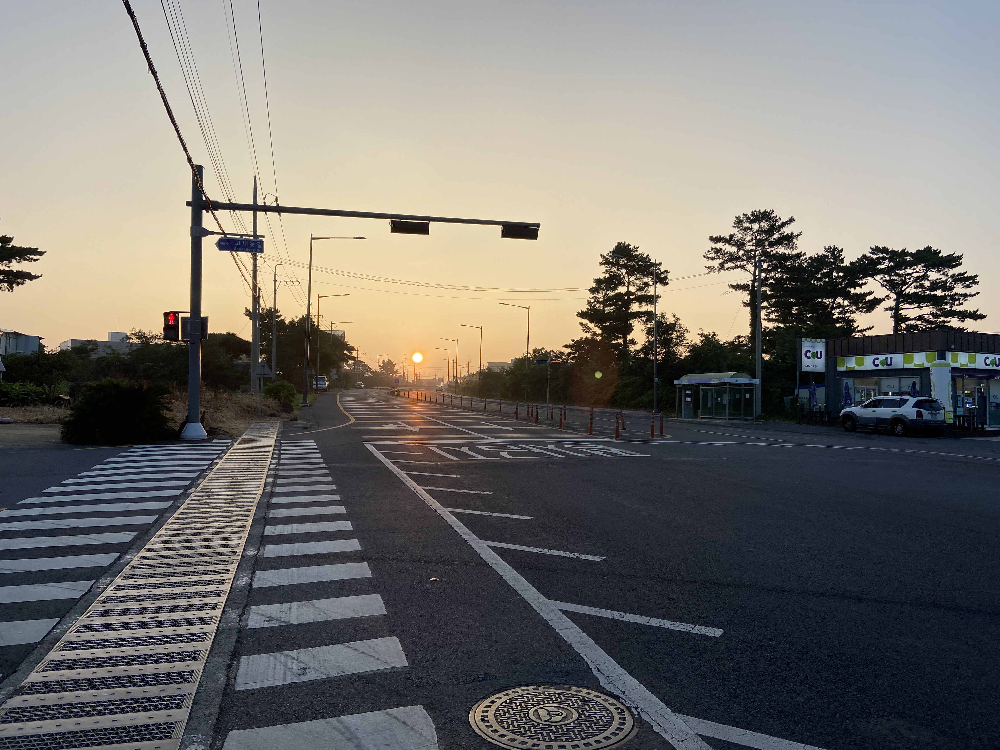

6살때 아버지와 할아버지를 따라 처음으로 야구장에 가게 되었습니다. 처음으로 갔던 한밭야구장이었고, 자연스럽게 한화이글스를 그때부터 응원하게 되었습니다. 이듬해인 7살때 처음 야구를 배우며 야구에 대한 흥미를 갖기 시작했고, 야구를 하며 야구선수를 꿈꾸게 되었습니다. 이 때문에 초등학교때는 학교가 끝나면 친구들과 놀거나 학업에 열중하기보다 공던지는 연습을 자주했습니다.
야구선수의 꿈은 비록 이루지 못했으나 제 삶에 많은 영향을 끼치고 있습니다. 야구선수의 꿈을 하지 못한것은 여러 주변사람들의 만류였고, 때마다 타고난 기질에 대해서 지적받으면서 꿈을 이루는 것을 포기해야 했습니다. 더욱 오기를 가지고 중,고등학교 때까지 공던지는 연습을 계속 하게 되었습니다. 야구선수의 꿈을 포기한 현재는 사회인야구와 취미야구를 하는데, 많은 사람들은 제게 일반인 중에서 타고난 재능을 보유하고 있다고 말하는 경우가 많습니다. 이러한 경험이 저에게는 기질은 노력으로 대체될 수 있는 부분이라고 생각하는 계기가 되었습니다. 야구를 위해서 많은 연습을 하고 이를 경기에서 풀어나가는 과정에서 단점을 매우며 강점은 어떻게 더욱 돋보일 수 있도록 활용하는지를 배웠습니다.
When I was 6 year old, I had visited baseball stadium for the first time with my dad and grandpa. First staidum I visited was 'Daejeon' stadium, because of it, I have become a fan of Eagles. Next year, when was 7, I learned how to play baseball, it was so interested so that I dreamed to become a baseball player. Casue of it, I tried hard work to become a baseball player, like throwing balls, when I was elementry school students.
Even if I didn't not become a baseball player, it affected a lot in my life. When I had dreamed to bcome a baseball palyer, many people told me that I had no talent in playing baseball. It was the reason why I gaved up my dream. Now I'm enjoying playing baseball in amateur league baseball, many people in the team told me that I have talented in playing baseball. This experience make me think that there are no talented things, and it is possible that cauld overcome by efforts. Also I got a lot good lessons from practice and playing baseball my self.
평소에 시간적•금전적 여유가 될때 여행을 다닙니다. 지금까지 대부분은 부모님에게 의존해 여행을 다닌적이 많았으나, 작년부터는 새로운 곳을 스스로 다니고자 많은 시도를 했습니다. 새로운 경험과 가치를 느끼거나 갖는 것이 여행이라는 생각으로 여러 장소를 다녀보려고 노력했습니다.
가장 최근 여행은 올 여름 방문한 제주도입니다. 친구와 둘이서 함께하면서 '젊음'이라는 키워드를 가지고 여행을 하게 되었습니다. 제주도는 이전에도 몇번 방문한 경험이 있었습니다. 그러나 항상 동행했던 부모님과 가족구성원의 상황을 고려해서 여행을 하였기에 이번에는 보다 독립적이고 새로운 경험을 위한 여행을 하고자 했습니다.
제주도를 버스등의 대중교통을 이용해서 3박4일간 알차게 보낸 후 돌아오는 일정이었습니다. 가족들과는 함께 여행을 왔다면 즐길 수 없었던 여러 엑티비티와 경험을 하였습니다. 그 중 특히 한라산을 방문해 백록담을 직접 보고 온 것이 최고의 경험이었습니다. 독립적인 여행이 처음이었던 만큼 금전적으로는 여유롭지 못하면서, 이동에도 제약이 있기에 이것저것 고려해야할 것이 많았지만 또한 이를 3박 4일동안 여러 곳들을 알차게 여행하면서 잊지못할 추억을 만들었다는 것이 뜻깊은 도전이었습니다.
I often go to tirp when if I had no issues like I had not much work on my plate or enough money. I traveled a lot, but it was depended on my parents. So from last year I try to visit new place by myself. I think travel is feeling new experiences and values, so I has been tried to visit various places.
The place most recently I visited was 'Jeju' island. I travled with my freind. It's topic was 'Youth'. I had been their a few times. But it were always with my families. So this time be need not only to be more independent but include more new things.
The plan was 4 days schedule, using by bus and taxi. We enjoy new various activities that could not do if we had came with our families. Specially, the best experience was had visited 'Hallasan' and hiked to 'Bengnokdam'. It was the first independent trip. So, their were some issues like financial issue, transportation issue, etc. The trip was valuable challenge that could learn lots of things and never do again.
 
